Redesigning a lending app around the borrower, end to end
Зээл, төлбөр, хөрөнгө оруулалтыг нэг дор авчирсан апп. Банкны биш, зээлдэгчийн эргэн тойронд эхнээс нь дахин зохион байгуулсан.
- Үүрэг
- Product Designer, QA
- Хугацаа
- 4–5 сар
- Төлөв
- Нийлүүлсэн
- Холбоос
- Апп үзэх

Context
NetPay гэж юу вэ?
NetPay бол NetCapital-ийн дижитал зээлийн апп — зээл авах, эргэн төлөх, хөрөнгө оруулах гурвыг нэг дор нийлүүлдэг.
Эхний хувилбар ажиллаж байсан. Гэхдээ энэ нь банкны дотоод процессыг дагаж бүтээгдсэн тул хэрэглэгч тэр процессыг нь сурч байж л зээлээ авдаг байв. V2 нь ижил үйлчилгээг зээлдэгчийн шийдвэрийн дарааллаар эхнээс нь дахин зохион байгуулсан.
Товчхон
- Гурван үйлчилгээ, нэг апп
- Зээл, эргэн төлөлт, хөрөнгө оруулалт — өмнө нь тус тусдаа сурах шаардлагатай байсан гурван хэсэг.
- Банкны эргэн тойронд
- Ижил үйлдэлд өөр товч, өөр зай, өөр үг. Дэлгэцүүд хоорондоо юу ч хуваалцдаггүй байсан тул хэрэглэгч алхам бүрийг дахин сурдаг байв.
- Зээлдэгчийн эргэн тойронд
- Нэг компонентын сан, нэг багц дүрэм. Хэрэглэгч нэг удаа сурсан зүйлээ апп даяар ашигладаг болсон.
- Нийлүүлсэн, хэмжсэн
- Нийлүүлэлтийн дараах эхний дөрвөн сарыг өмнөх дөрвөн сартай харьцуулсан: нэг зочилт 10%-иар уртсаж, нийт ашиглалт 2.9%-иар нэмэгдсэн.
Хэрэглэгчид зээлээ авч чаддаг байсан — гэхдээ юу гэрээлж байгаагаа, дараа нь юу болохыг ойлгохын тулд хэт их хөдөлмөр зарцуулдаг байв.
Миний үүрэг, оролцоо
Гурван дизайнертай баг — нэг ахлах дизайнер, хоёр дизайнер. Доорх таван хэсгийг би хариуцсан: эхний гурвыг бүрэн, сүүлийн хоёрыг багийнхантайгаа хамтран.
-
A.
Дизайн систем
Дангаараа50+ компонент, загвар ба хувьсагчийн суурин дээр бүтээсэн. Гэрэл ба харанхуй горим, төлөв бүрийн загвар. Эхнээс нь дуустал бүрэн хариуцсан.
-
B.
QA тулгалт
ДангаарааНийлүүлэгдсэн дэлгэц бүрийг Figma файлтай элемент тус бүрээр тулгасан — 70 зөрүү бүртгэж, 171 дэлгэцийн зураг, 6 домэйн.
-
C.
Хүрэлт ба хөдөлгөөний тодорхойлолт
Дангаараа32 идэвхжих цэг, 7 төрлийн хэлбэлзэл. Юу хийх ёстой байсан, бодитоор юу хийсэн, аль хэлбэлзэл түүнд харьяалагдах нь.
-
D.
Эвристик үнэлгээ
Хамтран ажилласанХуучин хувилбарыг дөрвөн UX хуулийн эсрэг уншиж юу нь эвдэрсэнийг олж тогтоох ажил.
-
E.
Урсгал ба бага нарийвчлалтай дэлгэц
Дэмжлэг үзүүлсэнЗээлийн урсгалын диаграм, бүтцийн эхний хувилбарууд. Ахлах дизайнерын удирдлагаар.
Нийлүүлэлтийн дараа аппын засвар үйлчилгээг би үргэлжлүүлэн хариуцаж байна.
Users and problems
Хэн ашиглаж байгаа, юу нь эвдэрсэн — хоёуланг нь нотолгоотойгоор. Интерфейсийг UX-ийн хуулиудын эсрэг уншиж асуудлыг тогтоосон.
Юун дээр алдсан
- Дэлгэц бүр өөрийн дүрэмтэй — ижил үйлдэлд өөр товч, өөр зай, өөр үг.
- Нэг компонентын сан, нэг багц дүрэм. Нэг хяналт хаана ч ижил хяналт.
- Хэрэгтэй мөчид заавар алга. Хүү, хугацаа, шимтгэлийг бичсэн ч тайлбарлаагүй.
- Асуулт үнэхээр гарч ирдэг алхам дээр нь зааврыг урсгалд шингээсэн.
- Хүсэлт илгээгдээд чимээгүй болдог — төлөв ч алга, хариу хэзээ ирэх нь ч мэдэгдэхгүй.
- Тодорхой төлвүүд — шинэ, хянагдаж буй, зөвшөөрсөн, татгалзсан — шийдвэрийн цагийн хамт.
User flow & low fidelity
Зээлийн урсгал одоогийн байдлаараа, салаа тус бүрээр — эрх тогтоох хоёр зам, зээлээ зарцуулах нэг арга. Хуудсанд багтах ямар ч хэмжээнд уншигдахгүй тул хоёр диаграм.
2 харуулав · 30+ урсгал, салаа бүрийн бүтэлгүйтлийн замтай
Эрх тогтоох урсгал бүдүүвч нарийвчлалаар: дараалал, ХУР/ДАН руу шилжих шилжилт, түүнийг тасалдуулдаг төлвүүд. Нэг ч дэлгэц зурагдахаас өмнө дөрвөн бүтэлгүйтлийн замыг оруулан хэлбэрийг энд тогтоосон.
62+ бүдүүвч дэлгэц · эрх тогтоох урсгалын хэсгийг эндээс харуулав
High fidelity & usability testing
Системээс бүтээсэн эцсийн дэлгэцүүд — тодорхой байдал, хурд, мөн хаана байгааг чинь үргэлж хэлдэг зээлийн урсгал.
Зээлийн хүсэлт гаргах
Энэ бүх кейсийн үндэс болсон урсгал — нэг алхамд нэг шийдвэр, дүн, хугацаа бүр тэмдэглэгдсэн, алхам бүрээс буцах зам бий.
Хүсэлт, алхам алхмаар
Эхлээд дүн, гарын хэмжээтэй товчлуур дээр. Дараа нь хугацаа, дараа нь төлөх өдөр — алхам бүр тэмдэглэгдсэн, бүр нь засварлагдана, мөн та юунд ч амлахаасаа өмнө хуваарь зурагдсан байна.
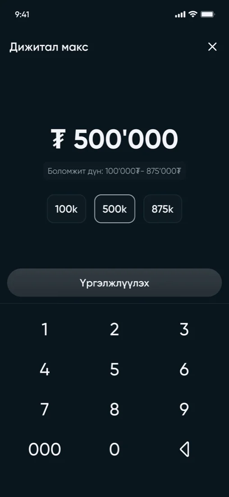
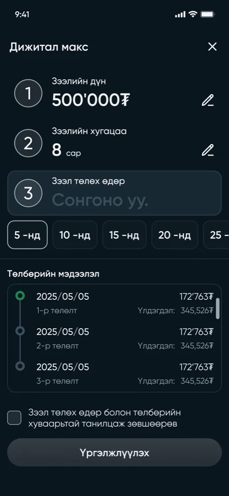
Эрхээ нэмэгдүүлэх
Эрхээ нэмэгдүүлэх гурван шударга зам: нэмэлт орлого мэдүүлэх, идэвхтэй зээлээ хаах, эсвэл цалингаа баталгаажуулах. Аль нэгийг сонгоход аль зээл чинь саад болж байгааг апп харуулна.
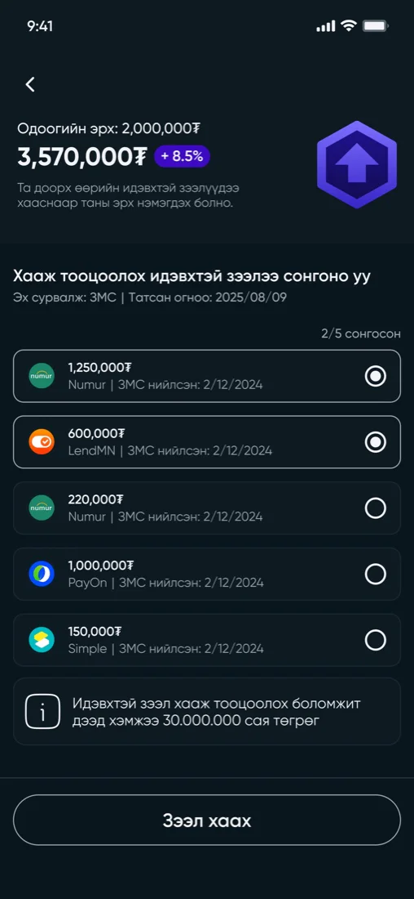
Итгэлцлийн сан нээх
Санд нэр өгч, царай оноох нь. Эдгээр дүрс тэмдэг бол аппын цорын ганц чимэглэл бөгөөд танигдах хуримтлалын зорилго л хадгалагддаг учраас энд байна.
Сан ажиллаж эхэлсний дараа
Үлдэгдэл, хугацаа, хүү, ард нь байгаа данс — „энэ юу вэ, хэзээ дуусах вэ?“ гэдэгт дэлгэцээс гаралгүй хариулахад хэрэгтэй бүхэн.
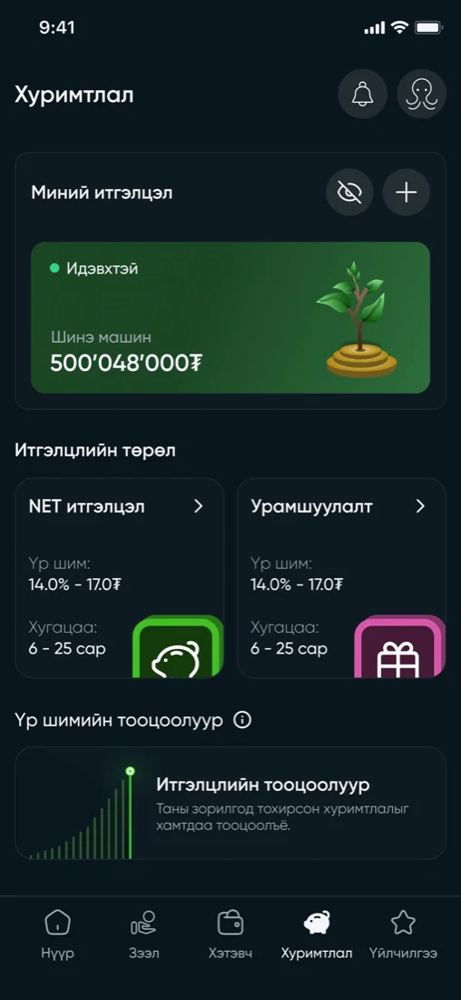
Нэхэмжлэх
Мерчант, дүн, юу болох гэж байгаа нь — гарах зам нь үргэлжлүүлэх замтай нэг дэлгэц дээр.
Хэтэвч, хоосон үедээ
Шинэ данс үнэндээ ямар харагддаг вэ: харуулах юм алга, хийх нэг тодорхой зүйл бий. Ард нь байгаа хуудас эхний төлбөр хийхээс өмнө яагаад карт хэрэгтэйг тайлбарладаг.
Usability testing
Есөн хүнийг итгэлцэл, хуримтлалын урсгалаар даалгавар тус бүрээр явуулж, бүрийг нь үнэлүүлж, юу нь ойлгомжгүй байсныг асуусан — долоо нь компани дотроос, хоёр нь гаднаас. Аль урсгал бүтэлгүйтэж байгааг, мөн үг хэллэг хаана хор хөнөөл учруулж байгааг харахад хангалттай.
Сан цуцлах үйлдэл туршсан бүхнээс хамгийн доод оноо авсан — нэг оролцогч тэг тавьсан. Цуцлах товч дарахад юу болохыг баталгаажуулах цонх хэлж өгөөгүй.
„Итгэлцэл цуцлагдсан үед зураг нь сааралтаж харагдахын оронд цуцлагдсан гэсэн төлөв оруулсан нь илүү user friendly байх.“
„Мэдээлэл өөрчлөх flow-г солих. Нуугдаад байгаа юм шиг байна.“
„Текстүүд нь хэт их байна, бусад банк санхүүгийн газрын мэдээлэл эвтэйхэн хүснэгтэнд багтдаг шиг байвал дээр байх.“
„Зөвхөн эхлэх, дуусах өдрөөр биш сар, улирал, жилээр шүүж татмаар байна.“

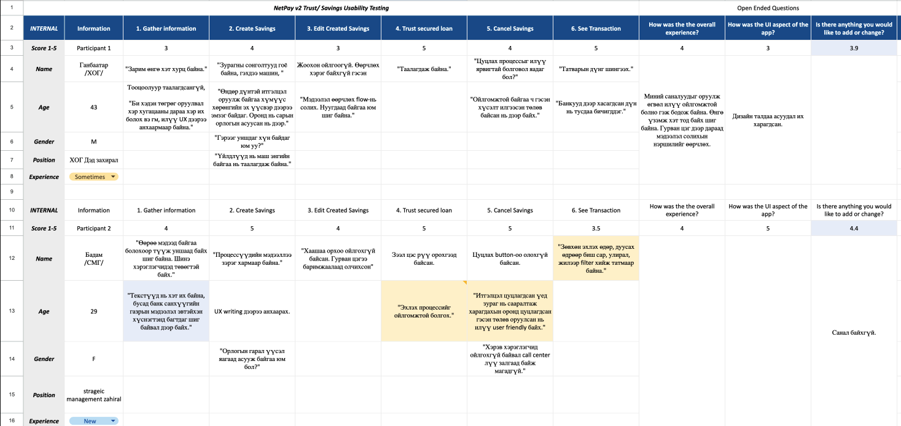
Design system
Тавь гаруй компонент, тус бүр өөрийн төлвүүдтэй, текстийн загвар, өнгө, үсгийн хувьсагчийн суурин дээр. Энэ бол кейсийн эхэнд нэрлэсэн нэгдмэл байдлын асуудлын хариулт: нэг сан, нэг багц дүрэм, нэг хувьсагчаас гэрэл ба харанхуй.
11 харуулав · 50+ компонент, текстийн загвар, өнгө ба үсгийн хувьсагч
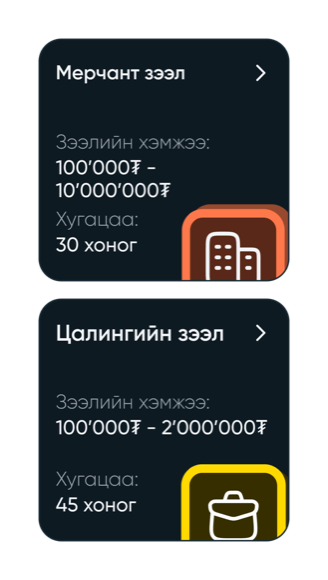
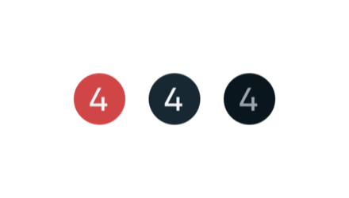
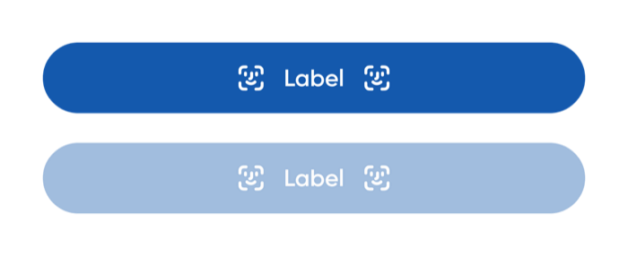
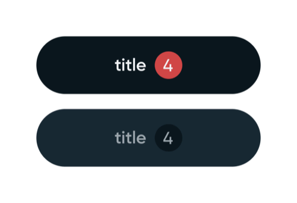
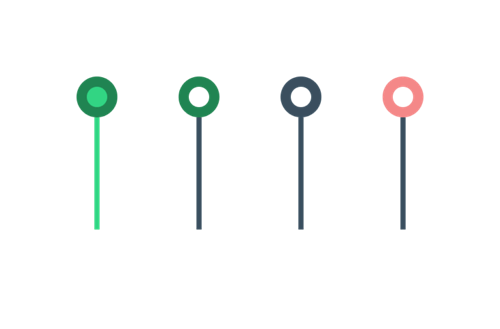
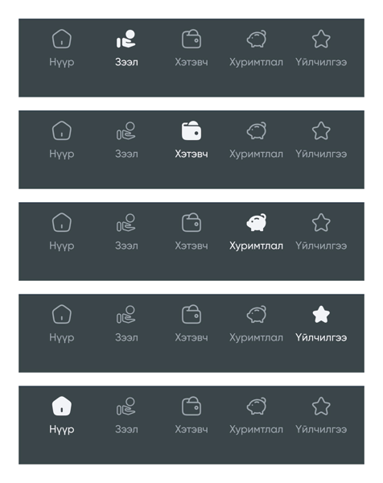
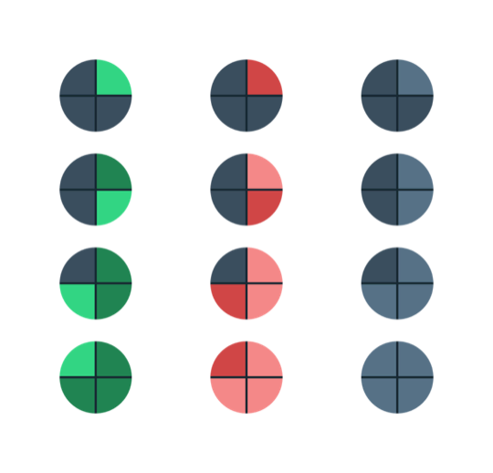
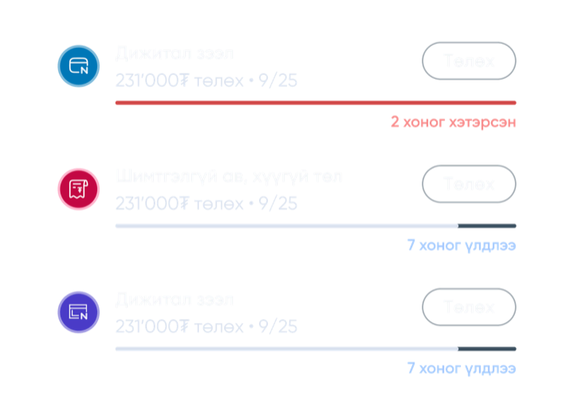
Handoff
Хөгжүүлэлтэд шилжүүлэх багц: Figma дээрх эхнээс нь дуустал холбогдсон урсгалууд, мөн хүрэлт ба хөдөлгөөний тодорхойлолт.
Handoff preparation
Файлыг зурагдсан дарааллаар нь биш, уншигдах дарааллаар нь байрлуулсан — урсгал бүр дэлгэцээс дэлгэц рүү холбогдож, домэйнээр бүлэглэгдсэн тул хөгжүүлэгч дараагийн фрэйм аль нь болохыг асуулгүйгээр орцоос амжилт хүртэлх замыг дагаж чадна.
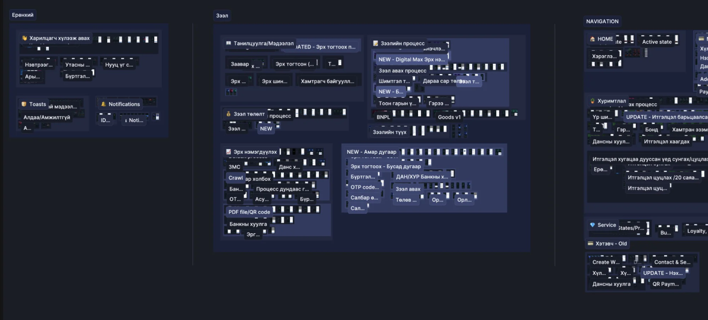
Haptics and motion spec
Интерфейсийг харахаас гадна мэдрэх ёстой бүх газар — хийсвэр хөдөлгөөн, юу хийх ёстой байсан, бодитоор юу хийсэн, мөн аль хэлбэлзэл түүнд харьяалагдах нь. Фрэйм дээр үлдээсэн сэтгэгдэл биш, хөгжүүлэлт шууд хэрэгжүүлж болох хуудас.
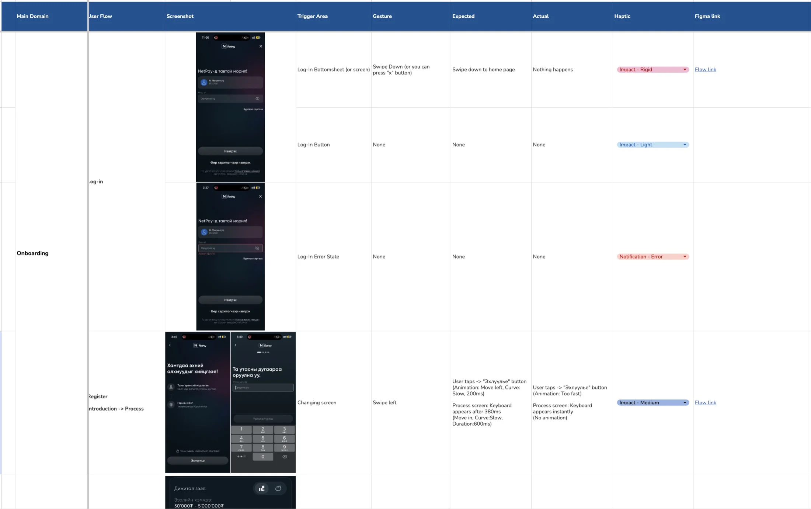
QA testing
Нийлүүлэгдсэн дэлгэц бүрийг Figma файлтай элемент тус бүрээр нь тулгасан — 70 зөрүүг тодорхойлолт, бодит хувилбар, ноцтой байдал, дэлгэцийн зурагтай нь хамт бүртгэсэн. Бүтэн хуудас доор, нотолгоотойгоо: хөгжүүлэлт шууд дараалан ажиллаж болох жагсаалт авсан.
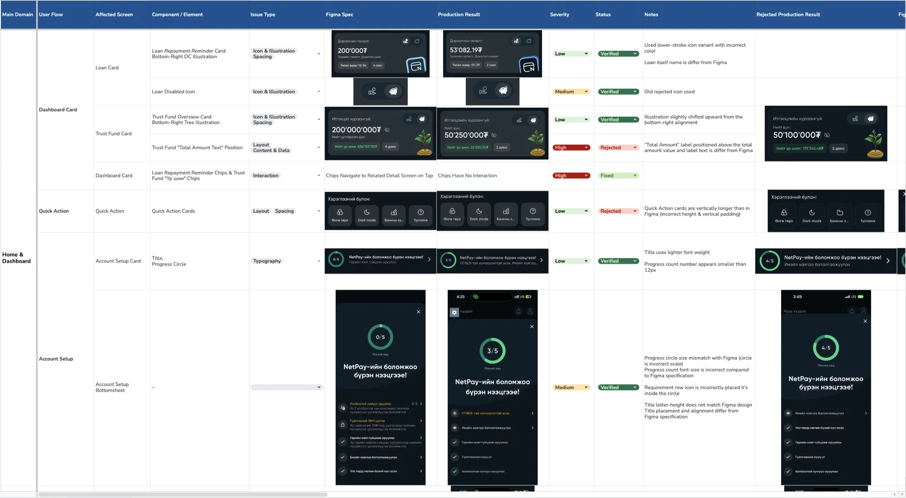
Тулгалтын шат бол ихэнх дизайнерын алгасдаг хэсэг. Мөн бодит хувилбар файлтайгаа таарч байгаагийн шалтгаан нь ч тэр.
Outcome
Нийлүүлэлтийн дараах эхний дөрвөн сар, өмнөх дөрвөн сартай: 2025‑05… 08 ↔ 2025‑10… 2026‑01. Суурь хэвээр, зочилт уртассан. Нэг зочилт 10%-иар уртсаж, нийт ашиглалт 2.9%-иар нэмэгдсэн.
Цөөн удаа орж, орсон болгондоо илүү ихийг хийдэг болсон.
+10.0%
Минут / идэвхтэй өдөр
3.86 → 4.24 мин: өмнөх ба дараах дөрвөн сарын дундаж
хуучин 4.x, 2025‑05…08v2 5.x, 2025‑10…2026‑01
Өмнө ба дараах харьцуулалт, хяналтын бүлэггүй: улирлын нөлөөг салгаж чадахгүй.
| Хэмжүүр | Өмнөх 4 сар | Дараах 4 сар | Өөрчлөлт |
|---|---|---|---|
| Минут / идэвхтэй өдөр | 3.86 | 4.24 | +10.0% |
| Минут / хэрэглэгч | 14.05 | 14.49 | +3.1% |
| Нийт ашигласан минут / сар | 1'860'969 | 1'915'841 | +2.9% |
| Сарын идэвхтэй хэрэглэгч | 132'479 | 132'224 | −0.2% |
| Идэвхтэй өдөр / хэрэглэгч | 3.64 | 3.41 | −6.2% |
3.41 өдөр × 4.24 мин ≈ 14.49 мин / хэрэглэгч, өмнөх 3.64 × 3.86 = 14.05-аас өссөн. Эдгээр гурван хэмжүүр тусдаа биш, нэг үржвэр.
Давтамж яагаад буурав. /02-т уншсан дөрвөн хуулийн зөрчил бүр нь хэрэглэгчийг буцааж шалгах, дахин оролдоход хүргэдэг байв. /03-т бичсэн хүлээлт яг үүнийг засах тухай байсан: нөхцөлийн алхам дээр цөөн хүн орхино, хүмүүсийг хоёр удаа хүсэлт илгээхэд хүргэдэг түгшүүр багасна. Хэмжилт яг тэр хэлбэрийг харуулав — цөөн зочилт, урт зочилт, нийт илүү хугацаа. Нэг хүн апп руу цөөн удаа орж, орох болгондоо илүү ихийг дуусгаж байна. Энэ нь нийлүүлэхээс өмнө бичигдсэн хүлээлт тул хойно зохиосон тайлбар биш.
Хатуу нотолгоо гэж үзэхгүй: хүсэлт бөглөх хугацаа, дуусгасан хувь хэмжигдээгүй тул «үр ашиг нэмэгдсэн» ба «сонирхол буурсан» хоёрыг лог дээр эцэслэн ялгахгүй. Гэхдээ хоёр дахь тайлбар нь зочилт яагаад уртассныг тайлбарлах үүрэгтэй болно.
Цонх 2026‑01-ээр төгсөнө: 2026‑02-т логийн
ачаалалтын алдаа бүртгэгдсэн (нэг өдөрт 209 хэрэглэгч, эргэн тойронд
13,000+), тиймээс түүнээс хойшхи сарууд харьцуулалтад ороогүй. Эх
сурвалж: dwh.app_log × netcore.auth_user,
зөвхөн харилцагч.